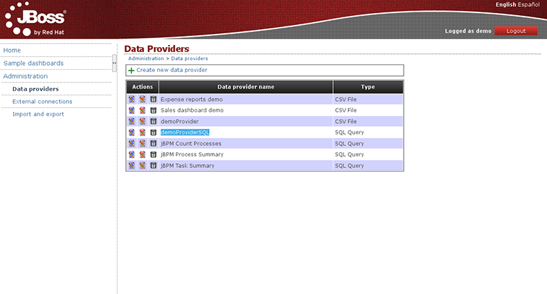

The Dashboard Builder is a full featured web application which allows non-technical users to visually create business dashboards. Dashboard data can be extracted from heterogeneous sources of information such as JDBC databases or regular text files. It also provides a generic process dashboard for the jBPM Human Task module. Such dashboard can display multiple key performance indicators regarding process instances, tasks and users.
Some ready-to-use sample dashboards are provided as well, for demo and learning purposes.
After installation and launch later we put the following address in any of the browsers we use regularly:
http://localhost:8080/dashbuilder/
We appears the login screen where the user can access demo and password demo, done that, will access the portal Dashboards Showcase, where we find different pages.

The first thing we do, after you have accessed the website, is to create a data provider for that, will access the Administration page and then to the Data providers, once there, select the option "Create new data provider".

We form appears like the one shown in the following image, in which we will have to fill the fields that we need:
Once you have filled all the fields that we consider necessary for the creation of our new data provider, click on Try, check that everything works properly, the application will give you a message "Correct data set ..." and we can keep our pressing Save.

That done, we get a form from data properties we have created, this shows each of the fields that make up the form, giving us the option to change your name or even type.

After this last step, we keep the latest changes and we have our new Data Provider in the list.

There is also the possibility of creating a data provider from a SQL Query. From the Administration / Data providers in select Type, choose the SQL Query option, and we see the following form, which will fill the fields Name, Datasource and Query, which will field a select to a table in the database we are using in our facility.

Once set the select, you click on try, and if successful we will get a message like the one pictured.

TODO: Explain sql_condition command.
The next page shows a few properties of our new Data Provider, we can edit later .

If we keep our work, we have created a new data provider, this time, starting from a SQL Query.
Una vez creados nuestros propios Proveedores de Datos, vamos a crear una página similar a la que podemos encontrarnos en el portal Demo que tenemos en la instalación por defecto.

Para hacer esto, lo que hemos hecho ha sido, salir del usuario Demo y logarnos como Administrador (Usuario: admin, Contraseña: admin)

La nueva página la podemos crear partiendo desde cero o bien la podemos construir clonando una que ya tengamos y eliminando los módulos o paneles que no necesitemos.

A partir del icono de "Add panel to the current page"  nos aparece un PopUp en la pantalla, con todos los paneles de que disponemos para poder poner en nuestras páginas...
nos aparece un PopUp en la pantalla, con todos los paneles de que disponemos para poder poner en nuestras páginas...

...lo que a nosotros nos interesa en este momento lo encontraremos en la parte de Dashboard y concretamente en Key Perfomance Indicator, una vez tenemos localizada y seleccionada esta opción, en la columna de la derecha nos aparece la opción de Create panel, lo siguiente que tenemos que hacer es arrastrar esta a una de las regiones que se nos resaltará en nuestra página.

Arrastrado el nuevo panel, lo primero que se nos va a pedir es el Proveedor de Datos que queremos utilizar para alimentar nuestra gráfica, si desplegamos el select veremos que están aquellas que hemos creado inicialmente, así que elegimos una de ellas.

Y automáticamente nos aparece el panel de edición de las gráficas. Es un entorno intuitivo, y que no requiere de demasiadas explicaciones, de todos modos paso a detallas aquellos puntos que pueden resultar más conflictivos.
 |
|
De todos modos, siempre estamos a tiempo, de poder acceder en un futuro, siempre que lo necesitemos, a las propiedades de una gráfica (o de cualquier panel) y modificarlas, cambiando el tipo de visualización o datos que se están mostrando o incluso, el Proveedor de Datos que se está utilizando.

Para crear una página nueva, lo podemos hacer de dos modos diferentes, y aunque lo más común, es hacerlo a partir de existente, clonandola a través del icono  , en este primer ejemplo lo haremos a partir de una página nueva
, en este primer ejemplo lo haremos a partir de una página nueva  , estos iconos los encontraremos en la parte superior de nuestra página, en lo que denominaremos barra de administración.
, estos iconos los encontraremos en la parte superior de nuestra página, en lo que denominaremos barra de administración.

Para crear una página nueva, lo podemos hacer de dos modos diferentes, y aunque lo más común, es hacerlo a partir de existente, clonandola a través del icono. si accedemos, aparecemos en una página donde se nos piden una serie de parémetros, estos son los siguientes:

A continuación pulsamos sobre Create new page y nos iremos automáticamente a una pantalla donde se nos muestra toda la estructura de paginas que compone nuestro portar y donde podremos ver el lugar que ocupa nuestra nueva página.